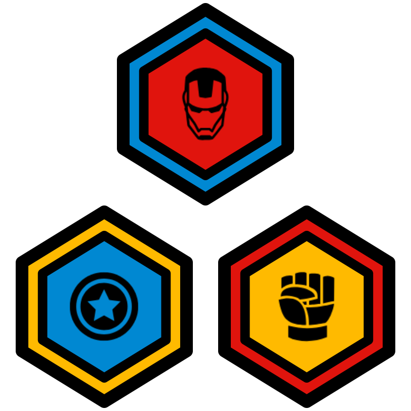

ThoughtSTEM Language Learning Handbook
1 Introduction
Welcome! This handbook contains learning "tactics" – i.e. algorithms, games, and activities designed to help people become extremely fluent in a variety of programming languages.
If you’re a coach, you should use these tactics to teach your students two things:
How to code
How to use the learning tactics on their own
This is a subtle but incredibly important point: You are not just teaching coding; you are teaching people how to learn coding. You’re not just playing games with students; you’re teaching them how to play the games without your help. You’re not just being a coach; you’re teaching them how to be coaches. You’re not just being a teacher; you’re teaching them how to be teachers. You’re not just being a leader; you’re teaching them how to lead.
What all this means is: as students become more and more skilled at doing these tactics, you should be giving them more and more responsibility for helping you lead the tactics.
A brand new student might simply follow along as you lead a tactic. That’s fine. But...
A first-day student who has done a few tactics already should be capable of helping to explain those tactics to others.
A new student with a few days of class under their belt should be able to help you out as an assistant coach in various ways.
Intermediate students should be able to lead a few easy learning tactics from memory and a few advanced ones if they are referencing this book.
Advanced students should be able to lead many tactics on their own from memroy and any tactic if they use this book.
Students will only experience this growth in self-driven learning and leadership if you encourage them to begin taking on leadership roles as soon as possible.
Don’t: Only use this book to teach coding.
Do: Teach how to use this book while you’re teaching coding.
Here’s one concrete way you can do that: In this book, you will see many tactics that give an instruction to you, the coach. For example:
👤 Coach
hand write the contents of the back of [Challenge-Card] on the bottom half of [The-Whiteboard]
A novice coach might see this instruction and immediately begin writing on the whiteboard.
But let me ask you, who is "the coach"? Remember, it isn’t just you. Think of your students as coaches-in-training from day 1.
Ask them to write code on the board. Ask them to interpret the instructions for you. Ask them to step into your shoes and lead for a few seconds. A few minutes. A full tactic. Two tactics in a row. And so on.
Students should always be actively participating as both learners and leaders. With your help, they can simultaneously improve at both.
It can take time. Have patience. But believe in your students. And believe in yourself.
2 The Language Learning Loop
The core thing you’ll be doing as a coach is running a "Language Learning Loop". It’s essential that coaches (and coaches-in-training) know what that is (and isn’t).
2.1 The "Basic"
The most basic thing that can be considered a "Language Learning Loop" is this, which we call the "Basic":
UNTIL class is over DO👤 Coach
pick challenge-card
👤 Coach
pick tactic
👤 Coach AND 👤 Team
do tactic together
👤 Team
take Kata test on challenge-card
A Language Learning Loop is any teaching/learning algorithm that has these 5 essential qualities:
- It is a loop. The part that says
UNTIL class is over DO
is what makes it a "loop". It involves selecting a challenge card in some langauge being learned (e.g. battlearena, html5-lang, vr-lang, or any other ThoughtSTEM language)
It involves selecting a tactic – i.e. a learning algorithm – from this handbook. All tactics in this book are language-independent! That is: any tactic will work for any language.
It involves doing that tactic together with the team – helping them understand both the code on the challenge card, but also the tactic itself, so that they become better and better learners in the future.
It ends with students being officially tested – to see if they can write the code from the back of the challenge card while only seeing the front of the card. Whether they pass or fail, the conclusion of this test is the end of one cycle of the loop – at which point it can begin again with a new challenge card (or the same one).
There are as many Langauge Learning Loops as there are coaches, and we do encourage you to develop your own unique loop (i.e. unique teaching style) over time. However, when you do decide to innovate on the Language Learning Loop, it is essential that you avoid accidentally leading something that does not fit the definition of a Language Learning Loop.
For example, this does not fit the definition:
UNTIL class is over DO👤 Coach
pick challenge-card
👤 Coach
pick tactic
👤 Coach AND 👤 Team
do tactic together
It is a loop. But this loop is missing one of the essential qualities! Indeed, it is missing the most essential quality of a Language Learning Loop: there is no test at the end!
Remember that students get badges like these for every ten tests that they pass:

These badges need to mean something. The tests are what help the badges maintain integrity. Tests are not easy to pass; and badges are not easy to earn. It’s supposed to be that way.
However, with the appropriate attitude, the learning (and earning) process can be fun – even though it is not easy. That’s precisely your job as a coach: to help students stay excited about challenging themselves, to help them embrace failure as a opportunity, to help them become proud of their hard work, to help them realize that they can do this even though it is hard.
There is nothing wrong with the "Basic". Many coaches, even extremely advanced ones, use this exact loop. Also, because it is so simple, it is a great one to teach to assistant coaches (i.e. your students).
There are other Language Learning Loops, however, with different properties. We’ll look at a few now.
2.2 The "Reduce Failures"
Some coaches do not like to see students fail. That’s understandable. This is a loop that greatly increases the chances that all of the students on your team will pass the test at the end of the loop. It does so by having another loop inside it, in which you really make sure that students are prepared for the test at the end.
UNTIL time is up DO👤 Coach
pick challenge-card
👤 Coach pick tactic
UNTIL the tactic is completed satisfactoraly DO👤 Coach AND 👤 Team
do tactic together
👤 Team
test on challenge-card
This Language Learning Loop is good for novice students (who tend to be sensitive to failure). The drawback is that it takes longer to get to the test. (Then again, the "drawback" also the whole point – to delay getting there until students are ready.)
2.3 The "100% Pass Rate"
Here’s one that makes absolutely certain that students pass the test at the end of the loop. It works by having an inner loop that has increasingly difficult tests embedded inside of it. This means that by the time you get to the test, you’ve already done the test many times already.
Here’s the "100% Pass Rate":
UNTIL time is up DO👤 Coach
pick challenge-card
👤 Coach
pick Disintegrating Code tactic
👤 Coach AND 👤 Team
do Disintegrating Code together
👤 Team
test on challenge-card
This is exactly the same as the "Reduce Failures" – except that instead of picking any tactic in this book, you must pick the Disintegrating Code tactic. This tactic (printed below, and also later in this book) involves a loop where the coach writes code on the whiteboard and removes parts from it until there is nothing left, testing the team at each stage:
👤 Coach
hand write the contents of the back of [the-challenge-card] on the bottom half of [the-whiteboard]
👤 Coach
hand write the contents of the front of [the-challenge-card] on the top half of [the-whiteboard]
UNTIL the contents of the bottom half of [the-whiteboard] is blank DO👤 Coach
remove some identifiers from the contents of the bottom half of [the-whiteboard]
👤 Team
erase all from the contents of [Team-Computers]
👤 Team
write a program that fits the requirements written on the top half of the whiteboard
By the time the tactic is complete, the students have written the entire code without any prompting – which is precisely what the official test requires them to do. Thus, the test can be skipped (since they did it during the tactic). No need to test the team twice!
This Language Learning Loop is excellent for very sensitive novice students. It has a drawback, though: It only involves one tactic! There are many tactics in this book. Each tactic helps strengthen different coding skillsets. A well-rounded education does require doing a diverse variety of tactics over time.
This is a great loop to start with, though. (Adding in the Code Anatomy tactic into the loop can be a great way to add another dimension to the educational experience.)
2.4 The "Choose Your Own Adventure"
This is a great loop for advanced students because it gives them more agency over their learning. Here, the tactic is chosen by discusssion, and this continues until the team decides to move on to the test.
UNTIL time is up DO👤 Coach
pick challenge-card
UNTIL team decides to move on DO👤 Coach
lead a discussion about "Which tactic should we do next?"
👤 Team
vote on which tactic to do next
👤 Coach AND 👤 Team
do tactic together
👤 Team
test on challenge-card
This works best with students who know a variety of tactics and who have developed enough metacognitive ability to know which tactics will help them and their team learn most effectively.
It is also a perfect example of the fundamental principle of this handbook: Teach students how to learn. The more you involve them as active participants in their own learning, the better.
The drawbacks are that you will need to know when to override the team’s decisions if their educational insights are flawed.
If they tend to keep picking the same comfortable tactics over and over, you will need to encourage them to explore new ones and to embrace discomfort.
If they tend to be reluctant to test themselves, you may need to encourage them to stop doing tactics and take the test – teaching them that failing a test is not something to be afraid of.
If they tend to be too focused on taking tests and earning badges as fast as possible, you may need to slow them down and point out that the goal is to learn deeply, not quickly.
And so on...
Remember that traning your students to be coaches doesn’t mean that you stop being one!
2.5 Language Learning Loops, Conclusion
To conclude, there are many possible Language Learning Loops. You can even create your own. And you are allowed to switch between different loops at will (even in the middle of a class).
As long as a loop contains the essential qualities, it is valid, and you may do it.
Keep in mind, though, the mark of a good coach isn’t how cool or complicated your Langauge Learning Loops are. It’s how and what your students are learning.
Are they learning coding? Are they learning how to coach themselves and others?
After just one hour of coaching, you can self-assess with some of these questions:
Do your students know about this handbook? If not, why were you hiding it from them? The first step to helping them to become better coaches is to reveal the resources that you use. Help them understand how t they can use those same resources.
Have your students seen you use this handbook to lead a Language Learning Loop and at least one tactic? It’s fine if you have the contents of this book memorized (the more you coach, the more tactics you’ll memoriz) – but you still need to teach "out of the book". Why? Because it implicitly teaches students how they can teach. If they see you using the handbook, they will be less shy about using it themselves when you hand it over to them and ask them to lead an activity. Use the book – and let your team see you using it. It is a mark of an experienced coach if you can simultaneously: 1) teach coding and 2) teach your teaching process.
Do your students know what a Language Learning Loop is? Do they know what a tactic is? If not, why not? Weren’t you doing a Language Learning Loop with them? (You should have been! That’s your job as a coach.) If you were, then why weren’t you calling it the "Language Learning Loop"? Use the vocabulary from this book as you lead activities and structure the educational experience. Your students should know these words: "tactic", "challenge card", "Language Learning Loop", etc. They should know these terms because you’ve been using them the whole time!
Would your students be able to lead a tactic on their own? If not, that’s okay. This can take time for some students. But ask yourself, what can you do next time to challenge them to take on even more of a leadership role?
3 Tactics
3.1 Disintegrating Code
👤 Coach
hand write the contents of the back of [the-challenge-card] on the bottom half of [the-whiteboard]
👤 Coach
hand write the contents of the front of [the-challenge-card] on the top half of [the-whiteboard]
UNTIL the contents of the bottom half of [the-whiteboard] is blank DO👤 Coach
remove some identifiers from the contents of the bottom half of [the-whiteboard]
👤 Team
erase all from the contents of [Team-Computers]
👤 Team
write a program that fits the requirements written on the top half of the whiteboard
3.2 Code Anatomy
👤 Coach
hand write the contents of the back of [the-challenge-card] on the bottom half of [the-whiteboard]
👤 Coach
label the lang line
👤 Coach
label all definitions
👤 Coach
label all non-definition code
👤 Coach
circle all key-words
👤 Coach
write the total number of key words
👤 Coach
put a dot at the beginning of all parenthesized expressions
👤 Coach
write up the total number of expressions
👤 Coach
above each expression dot, write the expression’s depth level
3.3 ???
TODO
3.4 ???
TODO
3.5 ???
TODO
3.6 ???
TODO
3.7 ???
TODO
4 Advanced Tactics
These are tactics that are longer and more complex. If students have done many smaller tactics, they are ready for these. If they cannot do smaller tactics quickly and efficiently, though, they are probably not ready.
There’s no harm in trying. But if it takes too long to get your team to understand how to do these tactics, then they simply need more practice. Do some easier ones and come back to these on a different day.
Note that the instructions in these tactics may make use of subroutines – which are instructions that aren’t printed in the tactic itself. It’ll look something like this:
👤 Team
Do something
👤 Team
Do something else
GO SUB:
#lang ts-tactics (select-secret-subgroup 'Hackers)
👤 Team
Do at the end
How many instructions are in the tactic above? It may seem that there are just three or four. But the GO SUB: instruction is very special.
👤 Team
Do something at the end
Doing tactics with subroutines requires keeping track of where you were in the tactic before you started doing the subroutine (because you’ll need to come back there when the subroutine is finished). It is the team’s responsibility to keep these things in mind – which is why these tactics are for advanced teams.
4.1 Mafia
👤 Coach
tell the following as a story (be creative) "You’re a game development company. The big release is a few days away! The code keeps breaking in the night..."
GO SUB:
#lang ts-tactics (select-secret-subgroup 'Hackers)
👤 Coach
hand write the contents of the back of [the-challenge-card] on [the-whiteboard]
👤 Coach
announce the contents of the front of [the-challenge-card]
UNTILEITHER: [Jail] contains all of the people in [Hackers]
OR: [Hackers] have exactly 2 points
DONIGHT👤 Hackers
introduce subtle bugs the contents of the contents of [the-whiteboard]
DAYGO SUB:
#lang ts-tactics (collaboratively-debug) END-OF-DAY👤 Coach IF the contents of the front of [the-whiteboard] has no bugs
IF the contents of the front of [the-whiteboard] has no bugsadd 0 to current points for [Hackers]
ELSEadd 1 to current points for [Hackers]
GO SUB:
#lang ts-tactics (vote-member-into-new-group (not-in 'Jail) 'Jail)
👤 Coach IF [Jail] contains all of the people in [Hackers]
IF [Jail] contains all of the people in [Hackers]lead a discussion about "What are some strategies for when you get picked as a hacker?"
ELSElead a discussion about "What are some strategies for debugging code?"
4.2 Team Memorize
👤 Coach
announce "In a moment, you must decide which order you will take turns in. You may also strategize during this phase. Do this wisely. After this phase, you will not be allowed to talk freely."
👤 Coach
lead a discussion about the front of [the-challenge-card]
👤 Team
arrange yourselves in a circle (the person to the right of [Coach] shall be [The-Starting-Player])
👤 Coach
announce "The [Silent] phase has begun. Any talking during this phase will result in penalties and possibly an instant-loss. Hand signals are permitted. Looking at the challenge card when you are not the owner is forbidden."
👤 Coach
give [the-challenge-card] to [The-Starting-Player]
UNTIL everyone in the circle has had at least 1 turn(s) DOGO SUB:
#lang ts-tactics (pass-and-memorize 10)
👤 Coach
announce "The [One-Talker] phase has begun. During this phase, you may only speak or gesture if you own the timer. If you own the whiteboard, you may write or gesture (but you may not speak). All other forms of communication from anyone will result in penalties or an instant loss for the whole team."
👤 Coach
hide [the-challenge-card]
👤 Coach
give [the-whiteboard] to [The-Starting-Player]
👤 Coach
give [the-timer] to the person to the right of [The-Starting-Player]
UNTIL everyone in the circle has had at least 1 turn(s) DOGO SUB:
#lang ts-tactics (timer-holder-talks-to-scribe)
👤 Coach
announce "The [Testing] phase has begun. All communication is forbidden in this phase. However, you may type on your own computer and look at the whiteboard whenever you want. By the end of this phase, the goal is to have the same code on all of the computers. And it must work correctly! Nod your heads if you understand."
👤 Team
nod
👤 Coach
announce "You have 5 minutes beginning now."
👤 Coach
set 5 minutes on [the-timer]
UNTIL [the-timer] is beeping DO👤 Teamwrite code
as you wish, but minding the rules of the current phase
👤 Coach
announce "The [Scoring] phase has now begun. If the code on EACH computer is correct, we all win."
GO SUB:
#lang ts-tactics (all-correct-post-mortem)
4.3 ???
TODO
4.4 ???
TODO
4.5 ???
TODO
5 Subroutines
Subroutines must be run on the computer, because they will print out differently depending on what arguments you supply. However, we will print some examples here so that you can get a sense of what certain common subtroutines will look like.
5.1 Pass And Memorize
👤 the owner of [the-challenge-card]memorize the contents of the back of [the-challenge-card]
within 10 seconds
👤 the owner of [the-challenge-card]
give [the-challenge-card] to the person to the right of [you]
5.2 Post Mortem
👤 Coach AND 👤 Team IF the contents of [Team-Computers] has no bugs
IF the contents of [Team-Computers] has no bugsannounce "We are the winners!"
ELSElead a discussion about "strategy for next time"
5.3 Select Secret Subgroup
Here’s an example of what you get with
#lang ts-tactics (select-secret-subgroup 'Hackers)
👤 Team
close eyes
👤 Coach
announce "If I tap your head, you are in the group: Hackers"
👤 Coach
tap the heads of random members of [Team]
5.4 Collaboratively Debug
UNTIL [Timer] is beeping DO👤 Team
remove bugs from the contents of the contents of the front of [Whiteboard]
5.5 Vote Member Into New Group
Here’s an example of what you get with
#lang ts-tactics (vote-member-into-new-group (not-in 'Jail) 'Jail)
👤 Coach
announce "The upcoming "finger vote" will decide who goes in [Jail]."
👤 people not in [Jail]
place hands on head
👤 Coach
announce "Everyone freeze. I now will count down from 3 to 1. On 1, you must point at someone who currently has their hands on their head. 3... 2... 1!"
👤 people not in [Jail]
point at who must go in [Jail]
👤 Coach
count the votes and take any implied actions